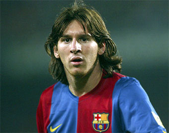

Conocido como Leo o Pulga, su inmensa calidad ya apuntaba cuando tenía cinco años y jugaba en el club de barrio de su ciudad natal dirigido por su padre, un empleado de la industria metalúrgica, y se reafirmó cuando, a partir de sus siete años, comenzó a jugar en las divisiones inferiores del Newell's Old Boys de Rosario.
A los 10 años, a punto de dar el salto al club River Plate de Buenos Aires, se le detectó un retraso en el desarrollo óseo causado por un bajo nivel de hormonas del crecimiento; el tratamiento médico era muy costoso, los clubes no quisieron afrontarlo y su padre, que no disponía de los recursos económicos necesarios, decidió entonces emigrar a Barcelona con su familia, donde se le había presentado una posibilidad laboral. En septiembre de 2000, Leo Messi realizaba una prueba en el F.C. Barcelona; el técnico Carles Rexach quedó maravillado con su talento futbolístico y, firmando en efecto un contrato en una servilleta de papel, como cuenta la anécdota, lo incorporó al club, que se hizo cargo del tratamiento del chico. Messi tenía entonces trece años y medía 1,40.
A partir de ese momento Messi se formaría en la Masia, centro de entrenamiento de la cantera azulgrana, donde pasó por las diferentes categorías (Infantil A, Cadete B, Cadete A, Juvenil A, Barça C y Barça B) antes de llegar al primer equipo, ya en la era del presidente Joan Laporta. Aunque participó en el amistoso que enfrentó al FC Barcelona con el FC Porto en el partido de inauguración del Estadio do Dragáo (16 de noviembre de 2003), su debut oficial en primera división con la camiseta azulgrana se produjo el 16 de octubre de 2004 en Montjuic, en el clásico derby con el Español de Barcelona.
Lo demás es historia reciente. A sus 17 años la Pulga marcaba su primer gol como profesional en el Barça en un partido contra el Albacete, y se convertía en el jugador más joven del equipo azulgrana en lograr un tanto en la Liga española. Durante esa temporada 2004-2005, las lesiones que arrastraban algunas figuras del primer equipo y su brillante trayectoria en el filial hicieron que fuese un habitual en las convocatorias y que contribuyera a la consecución del título de Liga, el primero de su palmarés.
Pero la progresión del ariete no había hecho más que empezar. La temporada 2005-2006, después de un gran debut en el trofeo Joan Gamper contra la Juventus de Turín, fue ya sin duda una buena campaña, aunque una lesión muscular lo apartó de los terrenos de juego en el tramo final de la competición. Se exhibió en el Santiago Bernabéu, en un memorable partido en el que los azulgranas vencieron al Real Madrid por 0-3, y en Stamford Bridge, en los octavos de final de la Liga de Campeones contra el Chelsea. El resultado de la temporada para el equipo de Frank Rijkaard no pudo ser mejor: ganó la Supercopa de España, la Liga y la Liga de Campeones, la segunda de su historia.
En 2006-2007 las cosas no fueron tan bien para el Barça, que no ganó ningún título importante, pero Messi deleitó a los aficionados con jugadas espectaculares que ya lo postularon entre los mejores jugadores del mundo. Entre sus momentos de gloria se cuenta el haber logrado los tres goles del Barcelona que le valieron el empate frente al Real Madrid, en el partido disputado en el Camp Nou el 10 de marzo de 2007.
Otro momento estelar en la biografía de Leo Messi fue su hazaña del 18 de abril de ese mismo año, en las semifinales de la Copa del Rey contra el Getafe, cuando eludió a cinco jugadores, portero incluido, e hizo el segundo gol de su equipo. Esta genialidad dio la vuelta al mundo y todos lo compararon con el Maradona que coronó el célebre "Gol del siglo" ante Inglaterra, en el Mundial de México de 1986. La progresión del jugador continuó en 2007-2008, una temporada difícil para el equipo, que vio cómo se agotaba el proyecto liderado por Ronaldinho y acababa la era de Frank Rijkaard en el banquillo.
El gol frente al Getafe fue de inmediato comparado con el "Gol del siglo" de Maradona
La era Guardiola
El FC Barcelona inició la temporada 2008-2009 con un nuevo proyecto que generó un cierto escepticismo entre los culés. El presidente Laporta había confiado el banquillo a un hombre de la casa, Josep Guardiola, con buenos resultados en el filial pero sin experiencia en primera. Los más optimistas auguraban buenos resultados a largo plazo. Pero la historia fue otra. Los chicos de Guardiola, con Messi convertido en crack indiscutible, pergeñaron la campaña futbolística más apasionante en décadas. Con un fútbol de libro, alabado en Europa y en el mundo, encadenaron victorias y resultados que pulverizaron todos los récords y consiguieron lo que parecía imposible: ganar en una misma temporada la Copa del Rey, la Liga y la Liga de Campeones, un triplete histórico que nunca antes había logrado ningún equipo español.
En esta campaña, Messi completó su primera temporada sin lesiones y superó su récord de partidos jugados (51) y goles (38). El argentino fue decisivo en las finales de Copa y Champions -marcó el segundo gol del Barça en cada una de ellas-, y, entre goles antológicos, fue el artífice de dos de los seis tantos que encajó el Real Madrid en el Santiago Bernabéu.
Los tres títulos obtenidos en la temporada 2008-2009 daban acceso al club a disputar otros tantos torneos a principios de la siguiente, antes de terminar el año: la Supercopa de España, la Supercopa de Europa y el Mundial de Clubs. En todos ellos resultó vencedor el Barça, marcando un récord histórico: levantar en un solo año los seis trofeos de las seis competiciones en que participaba. No hay duda de que, junto al entrenador, la explosión de Leo Messi fue una de las claves de que la era Guardiola (2008-2012) haya pasado a la historia como la mejor del club. El equipo conquistó durante ese cuatrienio 14 títulos de 18 posibles: a los seis citados, hay que sumar otras dos Liga españolas (2009-2010 y 2010-2011), otra Liga de Campeones en 2010-2011 (la tercera de Messi y la cuarta de la historia del club), la Copa del Rey (2011-2012), la Supercopa de Europa (2011), dos Supercopas de España (2010 y 2011) y el Mundial de Clubs de 2011.
De hasta qué punto el papel de Leo Messi en tales triunfos fue determinante pueden dar una idea las estadísticas. De los 16 goles marcados por Messi en la temporada 2007-2008, pasó a anotar 38, 47, 53 y 73 tantos en los cuatro años de la era Guardiola, cifras de por sí estratosféricas que pueden indicar además, en su progresión, que aún no ha tocado techo, como lo ilustran otros aspectos en que sus números mejoran cada año. Ya no sólo hay que valorar su virtuosismo en el regate (sus cambios de ritmo rompen a los rivales hasta el punto de que el técnico del Arsenal, Arsène Wenger, lo llamó "jugador de PlayStation") y su extraordinaria precisión en los disparos y remates, sino también una visión del juego que ha hecho de él un excelente pasador: de apenas tres o cuatro asistencias de gol en sus primeras temporadas, pasó a 29 en la temporada 2011-2012.
A estas alturas ya eran muy pocos los expertos, entrenadores y colegas que no lo consideraban el mejor jugador del mundo. La prensa deportiva y las federaciones internacionales lo reconocían como tal, y además de los incontables títulos de su palmarés deportivo, el jugador acaparaba reconocimientos individuales. Ya en 2009 la revista France Football le concedió el Balón de Oro y la FIFA lo designó Mejor Jugador del Mundo. Ambos premios se unificaron un año después en el FIFA Balón de Oro, que recayó sobre el argentino en sus tres primeras ediciones (2010, 2011 y 2012) y de nuevo en 2015.
El sueño del Mundial
Con la victoria de España en el Mundial de 2010, algunos de los compañeros de Messi en el F.C. Barcelona habían logrado incluir en sus vitrinas todos los trofeos posibles; para el argentino, ésta seguía siendo una asignatura pendiente. A pesar de su contribución, y excluyendo la medalla de oro en los Juegos Olímpicos de Pekín de 2008, los resultados con la selección argentina fueron mediocres. En el Mundial de Alemania (2006) no pasó de los cuartos del final.
 Con la selección argentina
Mayores expectativas despertó la participación en el Mundial de Sudáfrica (2010), con el astro argentino en un momento pletórico de forma; pero el combinado albiceleste, bajo la controvertida dirección del legendario Maradona como técnico, cayó estrepitosamente frente a Alemania, de nuevo en los cuartos de final. El distinto rendimiento de Leo Messi con la selección y con el F. C. Barcelona hizo correr ríos de tinta; al final, el fútbol es un juego de equipo en el que cualquier análisis debe tomar en consideración muchos factores.
Los argentinos depositaron sus esperanzas en el Mundial de Brasil de 2014, pero hay que decir que Messi no llegaba a la cita mundialista en su mejor versión. Finalizada la era Guardiola, demostró seguir siendo el de siempre en la temporada 2012-2013 con Tito Vilanova (el segundo de Guardiola) en el banquillo, y el club se llevó la liga con récord de puntos; una lesión del crack argentino en el tramo decisivo de la temporada impidió triunfos mayores. Pero a principios de la temporada siguiente, con su compatriota Tata Martino como entrenador, una recaída en la lesión lo apartó dos meses de los terrenos de juego, y aunque el Barça tuvo opciones hasta el final, la temporada 2013-2014 se cerró sin ningún título y con un Messi menos inspirado que en las campañas precedentes.
Ciertamente, ni la selección argentina ni Leo Messi brillaron especialmente en el Mundial de Brasil de 2014. Si bien los albicelestes empezaron ganando todos los partidos, lo hicieron siempre por la mínima, y fue necesario acudir a las tandas de penaltis para superar las semifinales. En la final contra Alemania, que venía de humillar a los anfitriones por un inaudito 7 a 1, los argentinos supieron frenar el embate germánico y dispusieron de oportunidades, pero acabaron perdiendo en la prórroga. Considerando el juego exhibido, el subcampeonato fue un buen resultado; los argentinos no lo habían logrado desde los tiempos de Maradona. Messi fue además distinguido con el Balón de Oro del Mundial, pero el sueño de conquistar el preciado título quedó otra vez pospuesto.
La era Luis Enrique
A estos relativos fracasos con la selección argentina debe contraponerse, después de dos temporadas difíciles, un nuevo resurgimiento del esplendor del Barça con el desembarco como técnico de Luis Enrique, antiguo jugador azulgrana que, tras su incorporación a principios de la temporada 2014-2015, justo a la finalización del Mundial, ha sabido dotar al equipo de nuevos registros más allá del fútbol «al primer toque» de Guardiola, reforzando su verticalidad (con precisos pases largos que sorprenden y superan las líneas rivales) y la potencia del contraataque.
Sumando a ello la plena recuperación de Leo Messi y su perfecto entendimiento con las nuevas incorporaciones en la delantera (el extremo brasileño Neymar, joven promesa y probable sucesor de Messi, y el uruguayo Luis Suárez como killer o rematador), el Barcelona reeditó en la temporada 2014-2015 los éxitos de 2009 adjudicándose por segunda el vez el triplete (la Liga española, la Copa del Rey y la Liga de Campeones), y a punto estuvo de igualar los seis títulos en año natural al proclamarse campeón de la Supercopa de Europa y del Mundial de Clubes al inicio de la temporada 2015-2016. El comienzo de esta nueva etapa no augura sino nuevos y arrolladores triunfos a la maquinaria azulgrana y a su principal estrella, convertido ya a sus 28 años en «leyenda en activo» del deporte más popular del planeta.
Con la selección argentina
Mayores expectativas despertó la participación en el Mundial de Sudáfrica (2010), con el astro argentino en un momento pletórico de forma; pero el combinado albiceleste, bajo la controvertida dirección del legendario Maradona como técnico, cayó estrepitosamente frente a Alemania, de nuevo en los cuartos de final. El distinto rendimiento de Leo Messi con la selección y con el F. C. Barcelona hizo correr ríos de tinta; al final, el fútbol es un juego de equipo en el que cualquier análisis debe tomar en consideración muchos factores.
Los argentinos depositaron sus esperanzas en el Mundial de Brasil de 2014, pero hay que decir que Messi no llegaba a la cita mundialista en su mejor versión. Finalizada la era Guardiola, demostró seguir siendo el de siempre en la temporada 2012-2013 con Tito Vilanova (el segundo de Guardiola) en el banquillo, y el club se llevó la liga con récord de puntos; una lesión del crack argentino en el tramo decisivo de la temporada impidió triunfos mayores. Pero a principios de la temporada siguiente, con su compatriota Tata Martino como entrenador, una recaída en la lesión lo apartó dos meses de los terrenos de juego, y aunque el Barça tuvo opciones hasta el final, la temporada 2013-2014 se cerró sin ningún título y con un Messi menos inspirado que en las campañas precedentes.
Ciertamente, ni la selección argentina ni Leo Messi brillaron especialmente en el Mundial de Brasil de 2014. Si bien los albicelestes empezaron ganando todos los partidos, lo hicieron siempre por la mínima, y fue necesario acudir a las tandas de penaltis para superar las semifinales. En la final contra Alemania, que venía de humillar a los anfitriones por un inaudito 7 a 1, los argentinos supieron frenar el embate germánico y dispusieron de oportunidades, pero acabaron perdiendo en la prórroga. Considerando el juego exhibido, el subcampeonato fue un buen resultado; los argentinos no lo habían logrado desde los tiempos de Maradona. Messi fue además distinguido con el Balón de Oro del Mundial, pero el sueño de conquistar el preciado título quedó otra vez pospuesto.
La era Luis Enrique
A estos relativos fracasos con la selección argentina debe contraponerse, después de dos temporadas difíciles, un nuevo resurgimiento del esplendor del Barça con el desembarco como técnico de Luis Enrique, antiguo jugador azulgrana que, tras su incorporación a principios de la temporada 2014-2015, justo a la finalización del Mundial, ha sabido dotar al equipo de nuevos registros más allá del fútbol «al primer toque» de Guardiola, reforzando su verticalidad (con precisos pases largos que sorprenden y superan las líneas rivales) y la potencia del contraataque.
Sumando a ello la plena recuperación de Leo Messi y su perfecto entendimiento con las nuevas incorporaciones en la delantera (el extremo brasileño Neymar, joven promesa y probable sucesor de Messi, y el uruguayo Luis Suárez como killer o rematador), el Barcelona reeditó en la temporada 2014-2015 los éxitos de 2009 adjudicándose por segunda el vez el triplete (la Liga española, la Copa del Rey y la Liga de Campeones), y a punto estuvo de igualar los seis títulos en año natural al proclamarse campeón de la Supercopa de Europa y del Mundial de Clubes al inicio de la temporada 2015-2016. El comienzo de esta nueva etapa no augura sino nuevos y arrolladores triunfos a la maquinaria azulgrana y a su principal estrella, convertido ya a sus 28 años en «leyenda en activo» del deporte más popular del planeta.